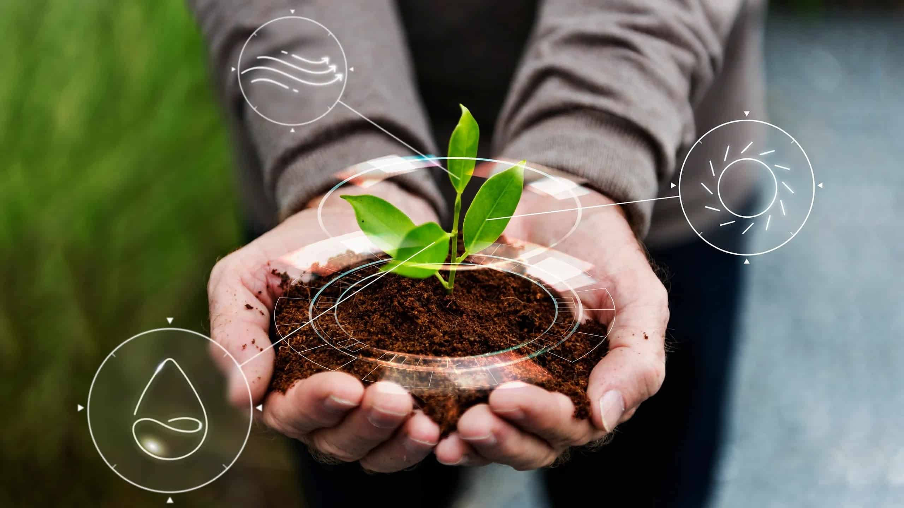
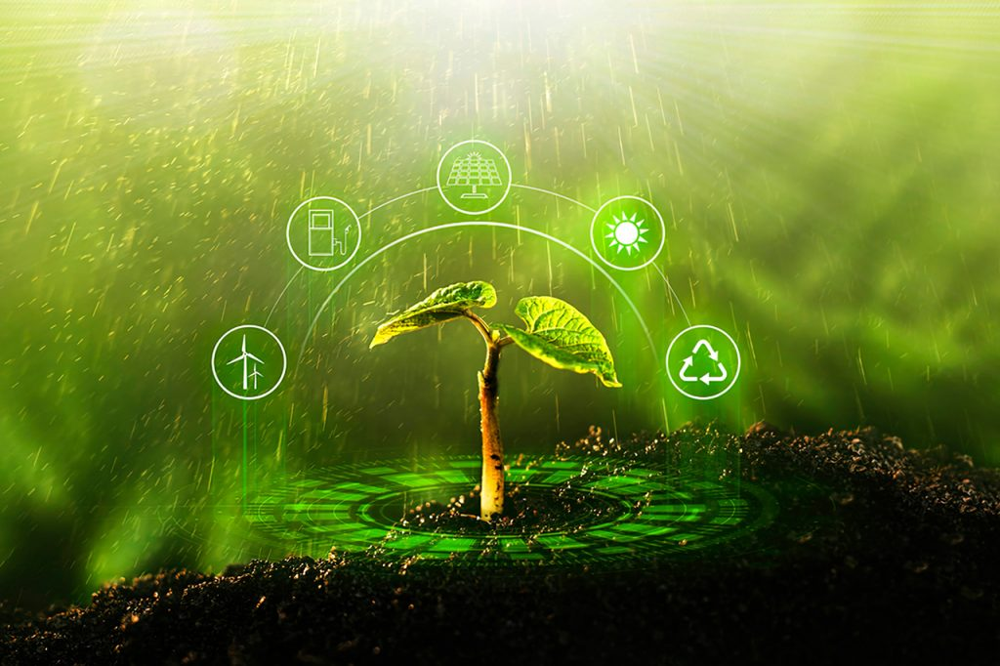
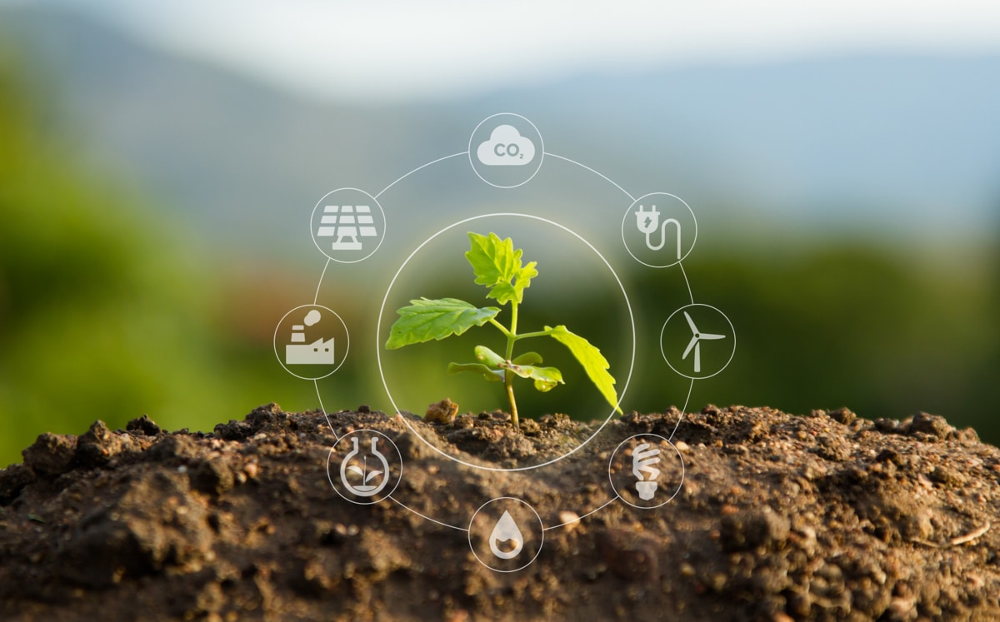
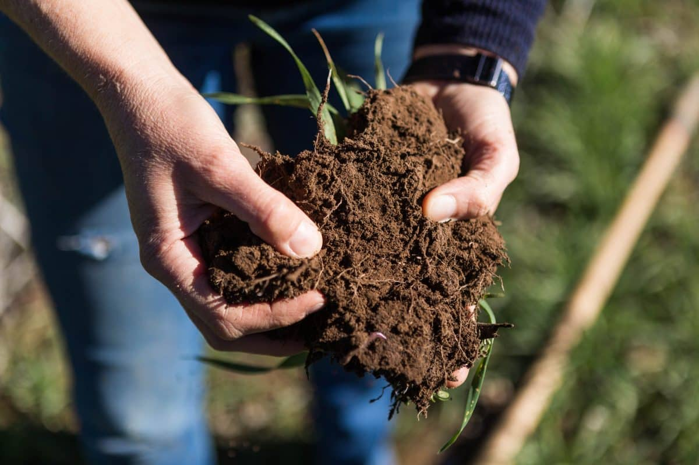

A agricultura regenerativa busca resolver problemas ambientais como a degradação do solo, erosão, poluição e perda de biodiversidade causados pela agricultura convencional. Por meio de práticas sustentáveis, como o manejo adequado do solo, rotação de culturas, integração de sistemas e redução do uso de produtos químicos, a agricultura regenerativa busca regenerar ecossistemas agrícolas, promovendo a saúde do solo, conservando recursos naturais e restaurando a biodiversidade. Além disso, também busca promover a resiliência das comunidades agrícolas, aumentar a segurança alimentar e reduzir os impactos negativos da agricultura no clima e no meio ambiente.
Os micróbios mudaram a composição da nossa atmosfera ao longo da história da Terra. Na Solo+, estamos garantindo que esses organismos possam fazê-lo novamente. Através de uma melhor compreensão de como os micróbios influenciam o ciclo do carbono, podemos criar novas oportunidades em escala planetária para o sequestro de carbono e melhorar a produtividade agrícola.
A Solo+ está aplicando sua tecnologia inovadora, "AgriCO2Capture", em todo o mundo para colocar a agricultura na vanguarda do combate às mudanças climáticas. A união de Biotecnologia e Mecatrônica impulsiona nossa abordagem, oferecendo tratamento de sementes com um Fungo Microbiano para criar Carbono Estável no Solo, nutrindo as plantações. Com a ajuda da mecatrônica, sensores automatizados controlam a umidade, fluxo de grãos e detectam pragas, aumentando a eficiência e reduzindo os riscos de perdas. Um exemplo é o Pluviômetro, que coleta dados das chuvas, informando a necessidade de irrigação.
Você está interessado em participar de um de nossos projetos de cultivo de carbono?
Preencha nossa breve Pesquisa de interesse do produtor
A agricultura regenerativa oferece uma abordagem sustentável e holística para a produção de alimentos, com benefícios significativos para o meio ambiente e a sociedade. Ao adotar práticas como o manejo adequado do solo, rotação de culturas, agroflorestas e integração de sistemas, a agricultura regenerativa promove a saúde do solo, aumenta a biodiversidade, reduz a erosão e a poluição, e conserva recursos hídricos.